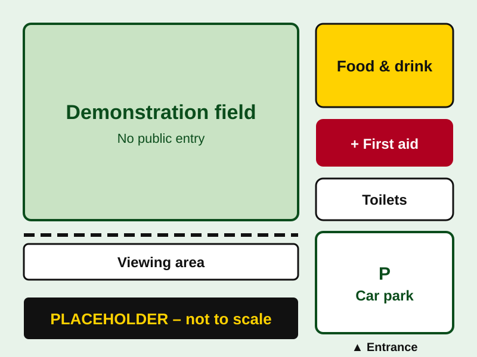

Event info
A day out on the farm watching modern silage machinery at work in the field — mowing, raking, harvesting, carting and clamping — all in aid of charity.
- Date
- Saturday 11 September 2027
- Gates open
- 9:00am (to be confirmed)
- Location
- Farm near Haverfordwest, Pembrokeshire (exact address to follow)
- Entry
- £X per car (price to be confirmed)
- In aid of
- [Charity name]
On the day
- Live silage demonstrations in the field
- Machinery on display to look at up close (when parked and switched off)
- Food and drink stalls
- Toilets and first aid on site
Timetable
Placeholder times. The final timetable will be published closer to the day. Times may change with the weather.
Safety rules
This is a working farm with large, fast-moving machines. Please follow these rules at all times.
- Stay behind the barriers and in public areas. Never enter the working field.
- Keep children close and hold their hands near machinery.
- Never approach a moving machine. Drivers may not be able to see you.
- Do what the marshals say. They wear high-visibility vests.
- Dogs must be on a short lead (policy to be confirmed).
- Do not climb on machinery unless a marshal says it is safe.
- Wear sturdy footwear. Ground can be uneven and muddy.
- Wash your hands before eating, especially after touching machinery or animals.
In an emergency
Find the nearest marshal or go to the first aid point (shown on the site map).
If someone is seriously hurt, call 999
Site map
Placeholder map. The real site map will be added once the layout is finalised.

Key places
- Entrance & car park — follow the signs and the marshals
- Viewing area — behind the barriers beside the field
- Food & drink — next to the viewing area
- Toilets — near the car park
- First aid — beside the information point
Getting here
Postcode for sat nav
SA00 0XX (to be confirmed)
By car
The event is a short drive from Haverfordwest. Follow the yellow “Silage Day” event signs from the main road (directions to be confirmed).
Free parking in a field on site. Marshals will direct you.
By train or bus
The nearest railway station is Haverfordwest. Details of any shuttle bus or taxi options to be confirmed.
Accessibility
The site is a grass field and can be uneven or muddy. Details of accessible parking and viewing to be confirmed.
Open in maps